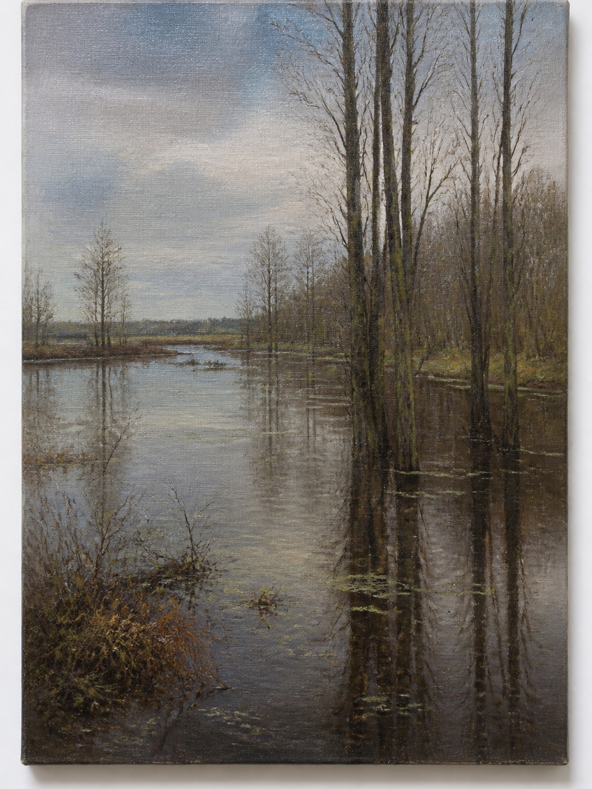

work_card / minimal

Тихий берег
Полина Мирош
Одна работа, четыре грамматики. Канон не выбран.
work_card / minimal

work_card / editorial
Тихий берег
Полина Мирош
Единственный большой формат серии «Полесье»
work_card / graphic
work_card / dense